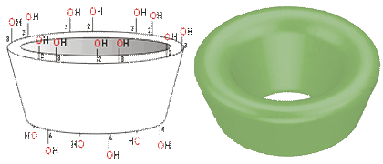
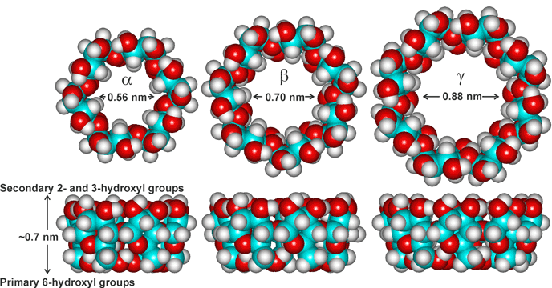

Alpha-cyclodextrin
Cyclodextrins are crystalline non-reducing cyclic glucose oligosaccharides.
'La sustance desséchée est très avide d'eau'
'the dried material is very hungry for water' M. A. Villiers, 1891 a
Cyclodextrins result from the cyclomaltodextrin glucanotransferase (E.C. 2.4.1.19; CGTase) catalyzed degradation of starch. Using Bacillus sp. strain 38-2, there is about a 90% yield from amylose. Cyclodextrins form soluble inclusion compounds with relatively hydrophobic molecules that fit into their hydrophobic cavities, displacing the weakly bound water present. Their structures [918], history [3983], and use in the food industry [1576] have been reviewed. There are three common cyclodextrins, with six, seven, or eight D-glucopyranosyl residues (α-, β-, and γ-cyclodextrin respectively), linked in rings by α-1,4 glycosidic bonds.
α-D-Glucose
Individual cyclodextrins can be preferentially synthesized using different enzyme sources. They are separated and purified by aqueous recrystallization followed by chromatography. The structures are chiral, with their glucose residues having the 4C1 (chair) conformation (see left).
Alpha-cyclodextrin
All three cyclodextrins have similar structures (that is, bond lengths and orientations) apart from the structural necessities of accommodating the different number of glucose residues. They present bottomless bowl-shaped (truncated cone) molecules, with inner cavities resembling slightly conical hourglasses because of the inward protrusion of the glycosidic oxygens [4131]. They are stiffened by hydrogen bonding between the 3-OH and 2-OH groups around the wider outer rim (see right). The hydrogen bond strengths are α-cyclodextrin < β-cyclodextrin < γ-cyclodextrin.
The flexible 6-OH hydroxyl groups are also capable of forming linking hydrogen bonds around the narrower bottom rim. However, these are destabilized by dipolar effects, readily dissociate in aqueous solution, and are not typically found in cyclodextrin crystals. The hydrogen bonding is all 3-OH (donor) and 2-OH (acceptor) in α-cyclodextrin but flips between this and all 3-OH (acceptor) and 2-OH (donor) in β- and γ-cyclodextrins [918].
Cyclodextrin's hollow conical shape

The cavities have different diameters dependent on the number of glucose units (empty diameters between anomeric oxygen atoms given in the diagram below). The side rim depth (shown below in the diagrams) is the same for all three (at about 0.7 nm). The distances (and structures) stated are not precise or fixed, and depend on the methods used in the modeling. They may vary experimentally according to the molecules entrapped, any derivatization, the properties of the solvating solution, and the temperature.
Comparison of alpha-, beta- and gamma-cyclodextrins

| Cyclodextrin | Mass |
Outer diameter, (nm) |
Cavity diameter (nm) |
Cavity volume, (mL ˣ g−1) |
Hydrate H2O [915] |
|||
Inner rim |
Outer rim |
cavity |
external |
|||||
| α, (glucose)6 | 972.9 |
1.52 |
0.47 |
0.53 |
0.10 |
129.5 |
2.0 |
4.4 |
| β, (glucose)7 | 1135.0 |
1.66 |
0.60 |
0.65 |
0.14 |
18.4 |
6.0 |
3.6 |
| γ, (glucose)8 | 1297.1 |
1.77 |
0.75 |
0.83 |
0.20 |
249.2 |
8.8 |
5.4 |
Cyclodextrin rings are amphipathic tori with the wider rim (secondary face) displaying the inflexible 2- and 3-OH groups and the narrower rim (primary face) displaying 6-OH groups on their flexible arms. These hydrophilic groups are outside the molecular cavity, whereas the inner surface is hydrophobically lined with the ether-like anomeric oxygen atoms and the C3-H and C5-H hydrogen atoms. In an aqueous solution, this hydrophobic cavity contains about 2.6 (α-DC), 6.5 (β-DC), or 8.8 (γ-DC), poorly held (low enthalpy but also low entropy) and readily displaceable water molecules on average. However, they may maximally contain about 5 (α-DC), 9 (β-DC), or 14 (γ-DC) water molecules [4131]. This water in the cavities has low density as the cavities are large enough to accommodate several more molecules. Thus, the otherwise hydrophilic cyclodextrin molecules may bind nonpolar, suitably-sized, aliphatic and aromatic compounds such as aroma compounds and lipophilic drugs. They may bind in 1:1, 2:1, and 1:2 ratios dependent on the molecules involved (for example, two molecules of γ-cyclodextrin bind well to single C60-fullerene molecules [944], encapsulating the fullerene, and may also bind extremely strongly with dodecaborates, like B12Cl122- [4451]). The formation of the bound inclusion complexes is driven by the enthalpic and entropic gain on reducing the hydrophobe-aqueous surface area and releasing water molecules from the cavity to the bulk phase. Such binding also allows cyclodextrins to be used to increase the (apparent) water solubility of hydrophobic compounds and minimize undesirable properties such as odor or taste in certain food additives. Cyclodextrin complexes are now widely used in the pharmaceutical, food, cosmetic, and toiletry fields [919].
The low solubility of β-cyclodextrin, compared to α- and γ-cyclodextrins, is helpful in its purification but presents a puzzle [915]. The causes of this low solubility and stable crystal structure are similar to those of scylloinositol and cellulose. They are the better placed intramolecular hydrogen bonding, better fitting with the structure of water and the consequential low entropy of hydration. Molecular dynamics show a significant increase in the local water structure and slower mobility of the surrounding water, reducing ordered tetrahedral water molecules localized inside the hydrophobic cavity. Cyclodextrins, their derivatives, and complexes may self-assemble in water to form transient clusters or aggregates. Such clusters may dissociate upon shaking or dilution. However, the clustering may have significant effects on the physicochemical properties of cyclodextrins and their complexes, including their ability to act as drug-delivery systems [3533].
Sugammadex, H-form
octakis[6-(2-carboxyethylthio)-6-deoxy]-γ-cyclodextrin,
γ-Cyclodextrin has the highest solubility and is most flexible and readily hydrolyzed by α-amylases, whereas α-cyclodextrin is most rigid and only very poorly hydrolyzed. The cyclodextrins, by themselves, are natural, non-toxic additives. The hydroxyl groups may be derivatized to modify the cyclodextrins' specificity, physical and chemical properties [3982]. The modifications are made (for example) to increase their water solubility, increase the specificity of binding, and overcome any restrictions on their pharmaceutical use. The primary 6-OH groups are the most accessible and, hence, most easily derivatized. The secondary 2-OH groups are most acidic, and the secondary 3-OH groups are most shielded from any reaction, as they are donor hydrogen-bonded.
Cartoon of sugammadex bound to rocuronium
based on a figure by Mdw346 at English Wikipedia
There is a strongly growing interest in chemically modified cyclodextrins, such as hydroxypropyl-β-cyclodextrin and sulfobutyl ether-β-cyclodextrin. They are used in drug formulation, cosmetics, and the toiletry industries [3451]. Sugammadex (octakis[6-(2-carboxyethylthio)-6-deoxy]-γ -cyclodextrin sodium salt, γ-cyclodextrin derivatized at all the 6-OH groups by S-propanoate) is used as an antidote (by binding) to certain curare-like muscle relaxants in anesthesia (see right). Many thousands of derivatives have been studied to find materials with enhanced complexation ability, inclusion selectivity, and molecular delivery. This publication mountain is increasing exponentially with the 2016 Nobel Prize in Chemistry awarded for work including cyclodextrins.
Larger cyclodextrins such as cyclomaltononaose (δ-cyclodextrin) and cyclomaltodecaose (e-cyclodextrin) are also found, if more expensive to purify. As their ring size increases, their stiffness diminishes, and their oligosaccharide rings become slightly twisted, reducing any binding capacity. Also, they are less stable, becoming much more easily hydrolyzed by α-amylases. Even larger ring structures such as (glucose)14 (ι-cyclodextrin), (glucose)26 (cyclomaltohexaicosaose), and (glucose)31 (cyclomaltohentriacontaose) have been purified, and rings with degrees of polymerization of up to several hundred have been obtained. They have entirely different conformations involving flips and helices [918]. Smaller cyclodextrins such as cyclomaltotriose (CD3), cyclomaltotetraose (CD4), and cyclomaltopentaose (CD5) are also found [3538]. Solid spherical cyclodextrin-based nanosponges may be prepared by cross-linking cyclodextrins.
Interactive structures are available (Jmol).
[Back to Top  ]
]
a M. A. Villiers, Sur la fermentation de la fécule par l'action du ferment butyrique, Comptes Rendus, 112 (1891) 536-537, (in French).
Home | Site Index | Starch | Hydrocolloids | Polysaccharide hydration | hydrogen-bonding | LSBU | Top
This page was established in 2005 and last updated by Martin Chaplin on 30 May, 2022